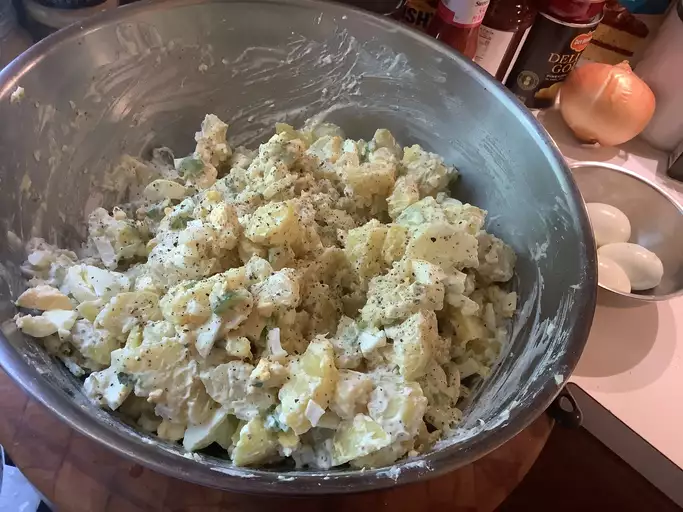

Potato Salad Recipe

Description
There are many ways to make potato salad, but if you're looking for a traditional, mayonnaise-based potato salad made with hard-boiled eggs, celery, and a little pickle relish for zing, you've landed on the right recipe. With more than one thousand ratings and nearly a thousand reviews from our Allrecipes community of home cooks, this recipe for Old-Fashioned Potato salad is a proven winner. And it's so easy to make using everyday ingredients. I'll show you how to make Old-Fashioned Potato salad, with loads of tips all along the way. Plus, I'll share tips for storing and freezing potato salad. (Yes, you can freeze potato salad!)
ingredients
- Potatoes: It's not potato salad without potatoes. The recipe doesn't specify what size potatoes or what kind, so choose medium-size potatoes, or enough to serve eight. As far as what kind of potatoes to use for potato salad, I'll cover that in the next section.
- Eggs: Hard-boiled eggs are a must-have for this kind of old-fashioned potato salad, but you can leave them out if you really want to.
- Celery: Celery adds a crunchy element to balance the softer texture and creaminess of the potatoes.
- Onions: You can use any onion you like, including yellow, white, or red onions. Chop the onion into small, uniform pieces so no one bites into a big chunk of raw onion.
- Relish: Use your favorite sweet pickle relish. Some reviewers chopped up sweet gherkin pickles, or substitute relish or pickles that are less sweet.
- Mayonnaise: This is the creamy element that brings all the ingredients together. For best results, mix the mayonnaise, mustard, relish, and seasonings together in a separate bowl. Give it a taste test and adjust the seasonings before adding to the potatoes, eggs, and onion.
- Mustard: Use your favorite mustard. Some reviewers like to use yellow mustard and some prefer Dijon.
- Seasonings: This recipe calls for garlic salt, celery salt, and ground black pepper to taste; some reviewers added extras like paprika and garlic powder. You can add minced herbs, too, like dill, chives, parsley, and tarragon.